「한 사람의 흰 것으로 천하를 희게」 — 백백교.
그 흰 것이 덥고 잇든 것은 — 땅 속의 삼백여 명이엇소.
原文조선일보 1937.4.13 호외 · 동아일보 1937.6.3 ~ 12.11
흰 것 하나로 천하를 희게 한다는 말. 그 말 아래, 사람들은 재산과 식구를 내노앗소.
처음에는 교조의 죽음을 숨겻소. 그 뒤로는 — 사람을 숨겻소.
지면 끗에서 드러나오.
스무 곳 남짓한 땅, 셀 때마다 달라지는 수, 그리고 — 병 하나.
이 지면은 — 읽어 내려갈수록 글이 하얗게 바래오.
흰 것이 무엇을 덥헛는지는, 검게 뒤집히는 장에서 보이오.
출처 · 조선일보 1937년 4월 13일 호외 · 동아일보 1937년 6월 3일(속간) · 6월 9일 · 9월 23일 · 10월 17일 · 11월 17일 · 12월 11일자 · 한국민족문화대백과사전
한 사람의 흰 것으로
천하를 희게 하자.
백백교가 내건 말이오. 그 시절, 조선 사람은 누구나 흰 옷을 입엇소.
그래서 — 누가 신도인지, 겉으로는 아모도 몰랏소.
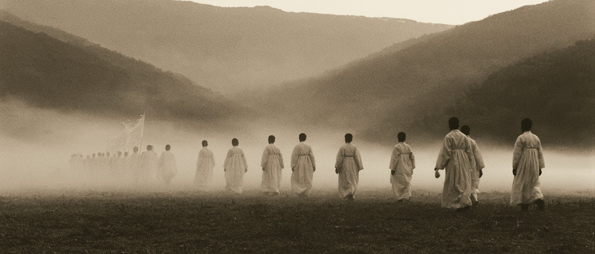
그림 · 재현교주는 말하엿소. 곳 물과 불로 심판하는 날이 온다. 살 곳은 전국 쉰세 곳의 피난처뿐이다.
그 피난처로 가려면 — 가진 것을 바쳐야 하엿소.
백백백의의의적적적감응감감응하시옵숭성
근거 · 한국민족문화대백과사전 「백백교」 · 흰 옷의 그림은 재현
그 말을 내건 사람을,
신도들은 「대원님」이라 불럿소.
백백교의 교주. 신이 되려 한 사람 — 이 지면의 모든 장은 그에게서 나왓소.
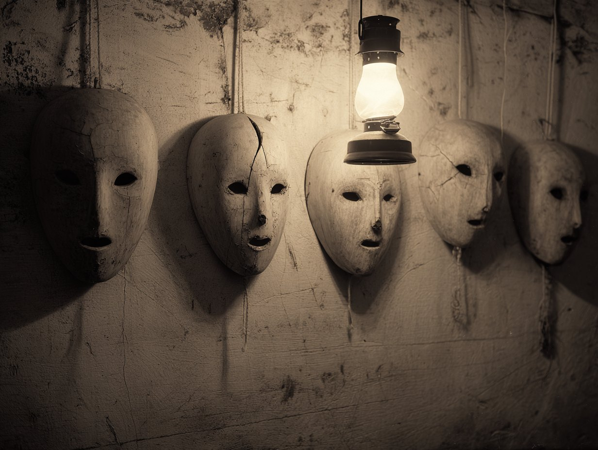
그림 · 재현얼굴 대신 — 가면그는 교조 전정운의 둘째 아들이엇소. 한 아버지 아래에서 — 세 아들이 저마다 교단을 세웟소.
그는 독립을 자기가 이끈다 하엿소. 그날이 오면 — 바친 만큼 벼슬을 내린다 하엿소.
신도의 재산으로 사치를 누렷소. 재산이 모자란 집에는 — 딸을 바치게 하엿소.
여신도들을 욕보이고, 그것을 「신의 행사」라 불럿소.
그리고 그는 — 얼굴을 숨겻소.
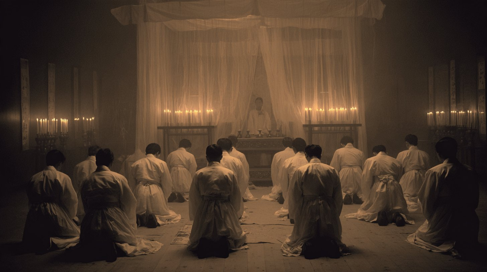
그림 · 재현근거 · 한국민족문화대백과사전 「백백교」 · 동아일보 1940년 3월 「세기의 살인마교 정체」 (희생 309명 · 18만 원 · 부전자전의 참극사)
그의 이야기는 —
아버지의 죽음을 숨기는 데서 시작하엿소.
대정 팔 년, 한 교조가 죽엇소.
그러나 그 죽음을 알리는 종이는 — 끗내 돌지 아넛소.
흰 종이 아래에 — 쓰다 만 부고가 잇소. 눌러 들추시압.
부 고
백도교 교조 전정운 선생께서
대정 팔 년 ○월 ○일
세상을 떠나셧기에
삼가 알리나이다
집안 ○○○ 삼가 올림 재구성
쓰엿스나 — 끗내 돌지 아넛소.
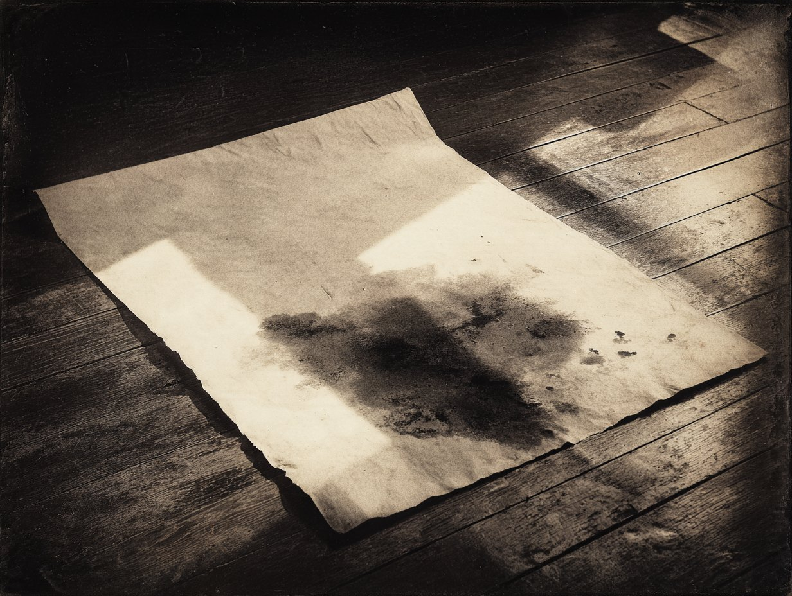
흰 종이를 눌러 들추시압그 아래에 — 쓰다 만 부고가 잇소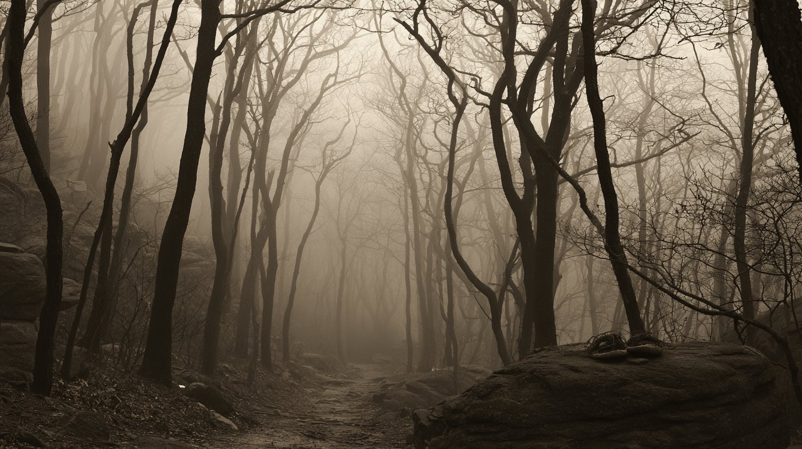
그림 · 재현전정운이 강원도 김화 오성산에서 백도교를 열엇소. 신도가 일만을 넘엇다 하오.
교조가 죽엇소. 아들 전용해 등은 알리지 안코 몰래 묻엇소.
정성희의 고소로 숨긴 죽음이 드러낫소.
갈라진 무리 하나를 전용해가 이끌엇소. 신도들은 그를 「대원님」이라 불럿소.
아버지의 죽음을 덥헛든 그 손이,
뒤에 — 더 만흔 것을 덥헛소.
근거 · 한국민족문화대백과사전 · 부고 문안은 재구성
대원님에게 가는 길은,
장부 한 권을 지나야 하엿소.
바친 만큼, 「독립이 되는 날」의 벼슬을 약속하엿소. 바칠 것을 하나씩 내 보시압.
임 명 장
아무개 귀하
바칠 것을 내면,
여긔에 벼슬이 적히오.
대원大元之印
무 효다섯을 다 바치면 — 맨 우에 한 줄이 더 적히오.
임명장은, 한 장도 지켜지지 아넛소.
그리고 — 신도들은 딸까지 바쳣소.
근거 · 한국민족문화대백과사전 · 벼슬의 높낮이와 바친 것의 짝, 장부와 임명장의 모양은 재구성
바친 것이 다하면 — 다음은 식구엿소.
한 집 식구를 여러 곳에 나누어 살게 하엿소. 하나가 떠나면 — 남은 식구가 볼모가 되엇소. 직접 해 보시압.
방석 네 장 — 한 집 식구요.
근거 · 한국민족문화대백과사전 · 식구와 지부의 짝은 재구성
소화 십이 년 이월 십륙일 밤.
왕십리의 한 집에, 불이 아즉 켜져 잇섯소.
이월 십륙일 밤 · 왕십리
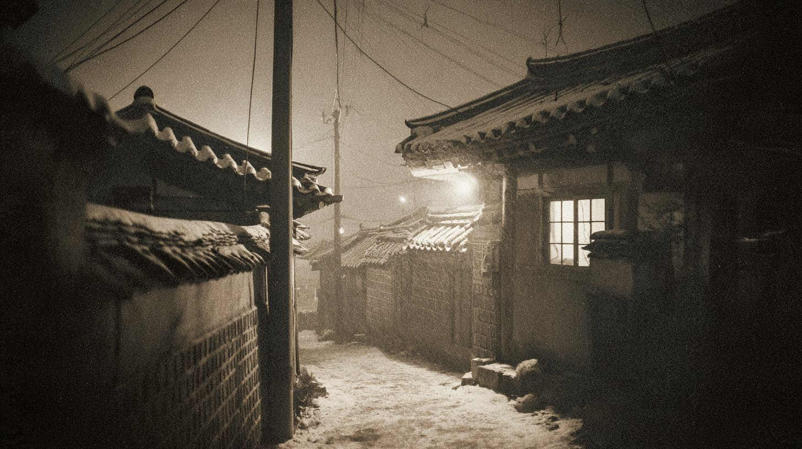
그림 · 재현一이월 십륙일 밤 · 왕십리
왕십리의 한 집에, 불이 아즉 켜져 잇섯소.
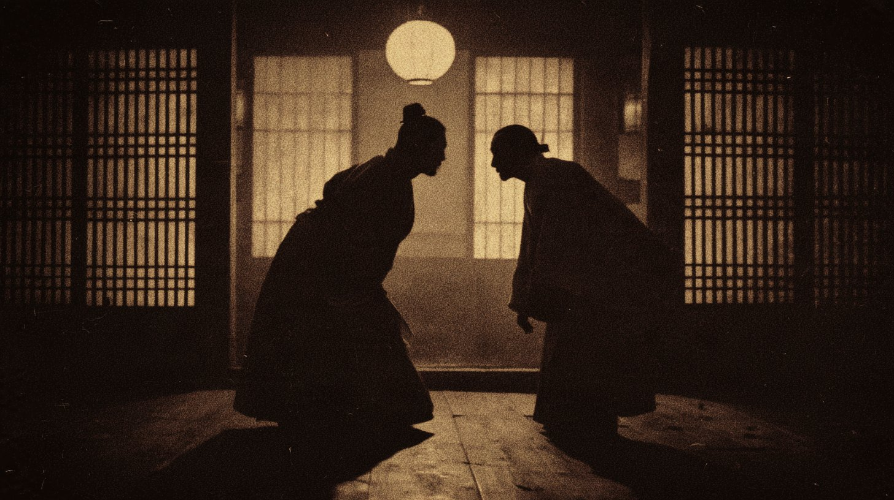
그림 · 재현二밤 · 만남
유곤용의 조부와 부친은 재산을 모다 바첫고, 누이동생은 교주에게 바쳐졋소. 뒤늦게 이를 안 그는 삼만 원을 바치겟다 하고 인삼과 록용을 보내어 — 이 밤, 하왕십리 부친의 집에서 교주를 맛낫소.
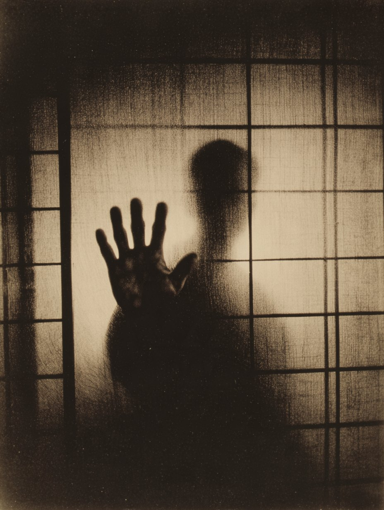
그림 · 재현三그 순간
그는 틈을 엿보앗소.
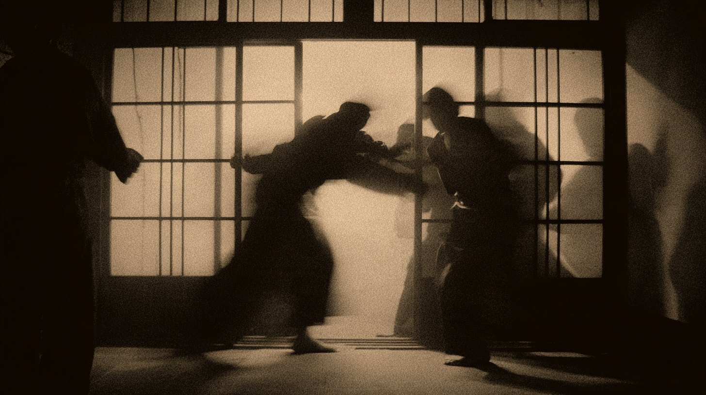
그림 · 재현四그 순간
복수하려 하엿소. 그러나 수행원들에게 막혓고 — 교주는 그 길로 달아낫소.
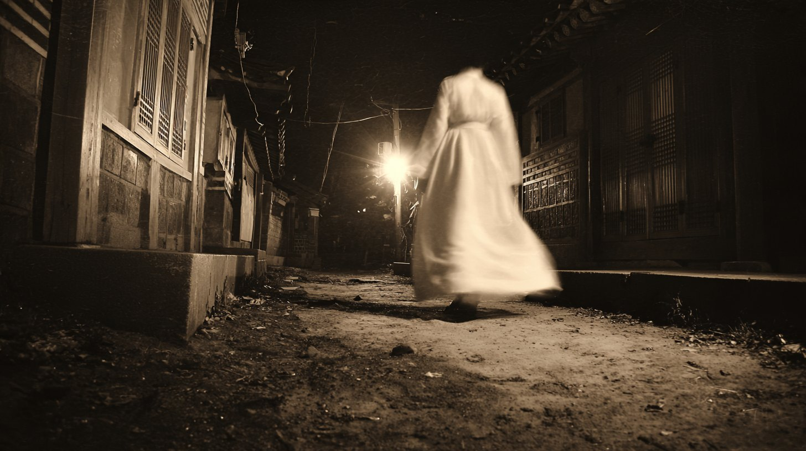
그림 · 재현五그 길로
그날 밤, 교주는 사라졋소. 경찰이 그를 쫏앗소.
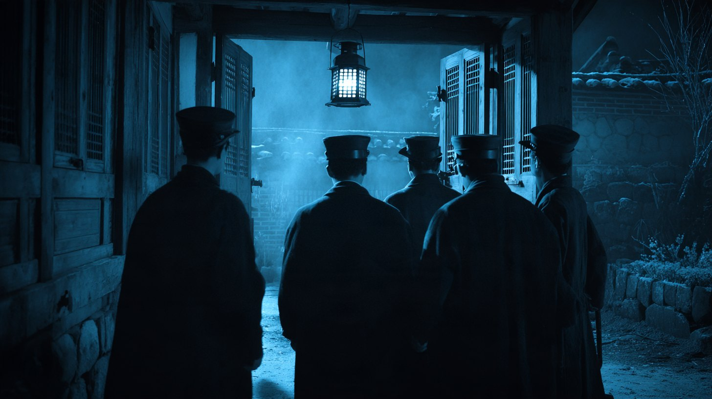
그림 · 재현六새벽
경찰이 인현동의 집을 덥쳣소. 이경득과 이순분이 붓잡혓소. 장부 속의 일이, 그제야 열리기 시작하엿소.
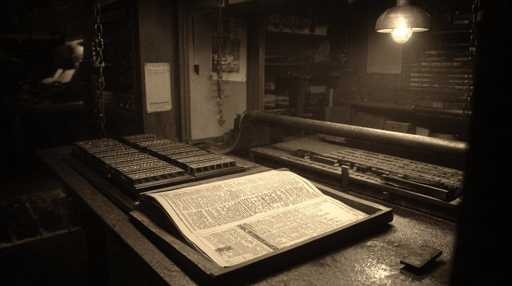
그림 · 재현報道禁止七사흘 뒤 · 이월 십구일
이 일을 신문에 싯는 것이 금지되엇소.
왕십리의 방 · 재현 그림 · 장면의 순서와 연출은 재구성 · 근거 · 후대 회고 기사 (3만 원 헌금 약속 · 인삼과 녹용 · 하왕십리)
소화 십이 년이월 십륙일 — 사월 십삼일
이월 십구일부터 사월 십이일까지, 이 일은 어느 신문에도 실릴 수 업섯소.
그 쉰세 날 동안 —
교주는 이미, 산에 누워 잇섯소.
이월 십륙일 밤, 교주는 사라졋소.
경찰이 그를 쫏앗소.
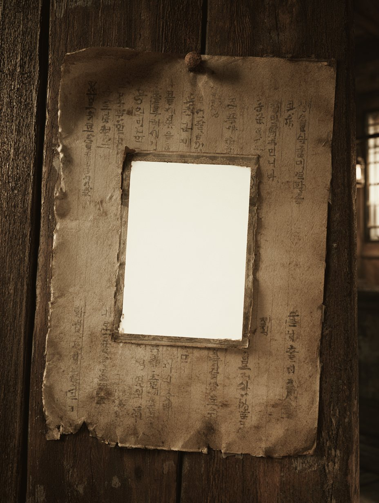
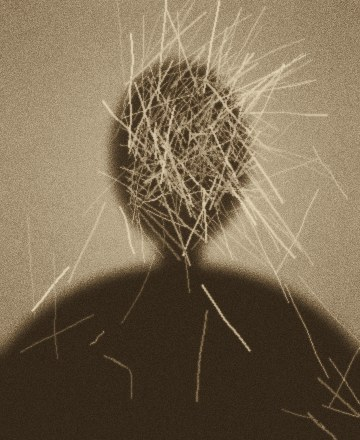
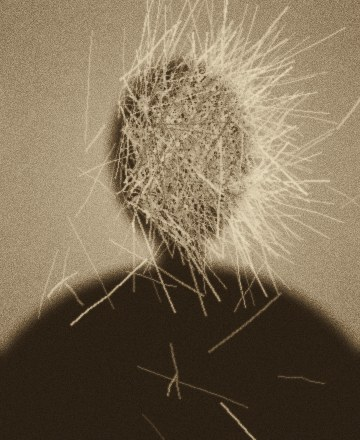
그림 · 재현수배지 · 재현 그림 — 얼굴 자리를 손가락으로 눌러, 기다려 보시압.
그가 써 온 일홈만 — 「김두선」 등 열여섯 개엿소.
천하를 희게 한다든 이는,
열여섯 개의 일홈 뒤에 숨엇소.
쉰 날 남짓 지난 사월 초, 양평 용문산 기슭에서 그를 차잣소. 이미 숨이 업섯소.
경찰은, 그가 이월 이십일일에 스스로 목숨을 끈엇다고 결론지엇소.
주머니에 남은 것은 엘진 금시계 하나와 팔십 원. 그를 알아본 것은 — 그의 아들이엇소.
그러나 — 얼굴은 알아볼 수 업슬 만큼 상해 잇섯소. 죽은 날을 두고도 의문이 남앗고, 신문에는 「다른 이로 꾸며 달아낫다」는 소문도 실렷소.
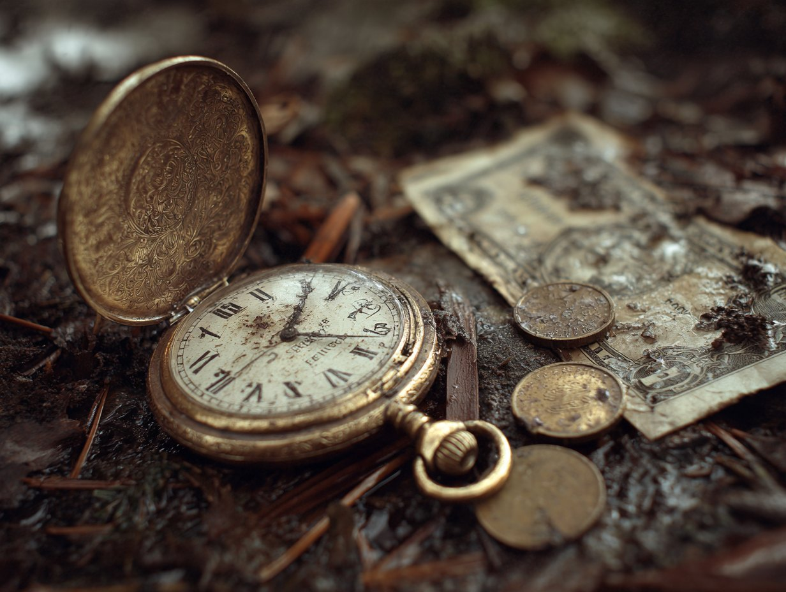
그림 · 재현근거 · 한국민족문화대백과사전 「백백교」 · 당시 보도
사월 십삼일, 금지가 풀렷소.
그날 — 신문은 산을 파는 이야기로 가득 찻소.
경성 근교에서 황해도, 강원도까지 — 이십여 곳의 산자락에서 주검이 나왓소. 묻힌 자리마다 흰 표지를 하나씩 꼬자 본다면 — 세어 보시압.
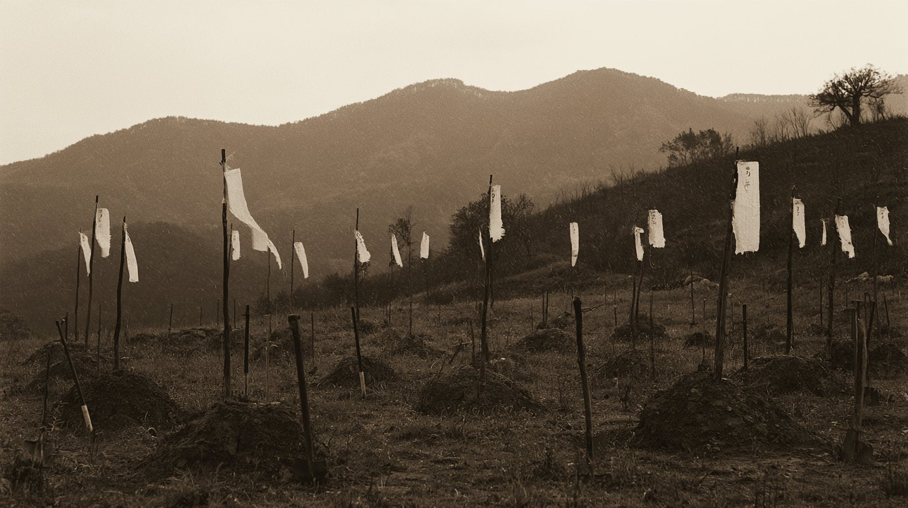
그림 · 재현아모도 — 끗내 다 세지 못하엿소.
표지 하나가 — 땅이 내노은 한 사람이오. 산비탈을 눌러 세어 보시압.
흰 표지를 꼬즌 산비탈 · 재현 그림 · 표지는 묻힌 자리를 나타낸 상징이오 — 실제로 꼬친 것은 아니오
신문마다, 날마다 수가 달랏소.
아모도 — 끗내 다 세지 못하엿소.
근거 · 조선일보 1937.4.13 호외 · 동아일보 1937.6.9 「발굴시체 삼백팔십」 · 1937.11.17 · 표지를 세는 장치는 재구성
原文조선일보 1937.4.13 호외 · 동아일보 6.9 ~ 12.11
속간한 동아일보는, 그 뒤 반년 동안 백백교를 따라 걸엇소. 첫 장은 조선일보 호외, 그 뒤는 류월 삼일에 속간한 동아일보요.
신문이 다 적지 못한 일은 —
삼 년의 조서에 남앗소.
신문이 다 적지 못한 것 — 삼 년의 수사와 예심이 조서에 남겻소. 먹줄을 하나씩 거더 읽으시압.
재산이 모자란 신도에게는 딸을 바치게 하엿소. 그 가운데 몇은 교주의 첩이 되엇고, 나머지는 간부들에게 넘겨졋소. 재판에는 「외설」의 죄목이 부텃소.
죽이는 일은 「벽력사」라 불린 광신도들이 맡앗소.
떠날 것 가튼 이. 비밀이 샐 것 가튼 이. 먹여 살리기 버거운 이. 경찰 눈에 띌 만큼 커진 무리. — 그것이 까닭이엇소.
팔십여 차례에 걸쳐, 삼백오십여 명을 죽여 산에 묻엇다고 전하오. 마포 · 청량리 · 양평 · 연천 · 사리원 · 세포 · 양주 — 이십여 곳의 아지트에서 나왓소.
일천구백십오 년 무렵, 교조 전정운은 오성산에서 첩 넷을 산 채로 묻엇소. 그 일은 십오 년 뒤에야 드러낫소. 아들은 — 그 길을 더 크게 걸엇소.
구원을 바라고 들어간 곳에서 —
비밀을 알앗다는 까닭 하나로, 죽을 수 잇섯소.
근거 · 한국민족문화대백과사전 「백백교」 (314명 살해 혐의 기소) · 경성일보 1937.4.13 호외 · 동아일보 1937 (살인사교의 참혈사 · 시체 발굴 탐험대) · 재판 기사 스크랩
교주는 업섯소.
남은 이들이 — 법정에 섯소.
수사 삼백일 일. 살인 · 사체유긔 · 사긔 · 공갈 — 열 가지 죄목. 그러나 맨 압 자리는 — 비어 잇섯소.
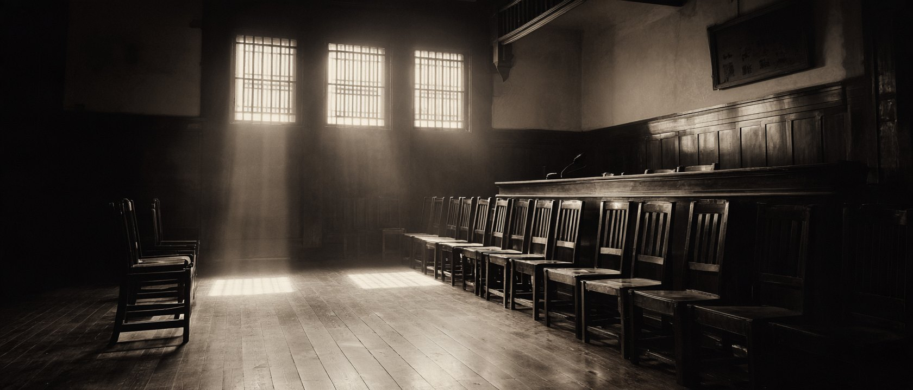
그림 · 재현나머지는 징역. 검사는 무긔 이하 여섯에 대해 다시 다투겟다 하엿소.
그 사형이 실제로 집행되엇는지는 — 긔록이 차자지지 아넛다는 말도 잇소.
근거 · 동아일보 1940년 3월 (구형 — 18명 사형 구형 · 판결 — 12명 사형 · 2명 무기 · 검사 항소) · 한국민족문화대백과사전 「백백교」 (12명 사형) · 동아일보 1937.12.11 (수사 301일)
그런데 — 그 혼자만은,
땅에 묻히지 아넛소.
그는 땅에 묻히지 아넛소. 칠십사 년 동안 — 병 속에 잇섯소.
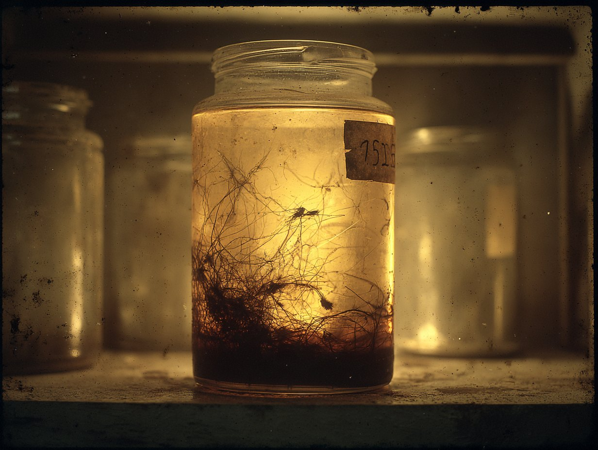
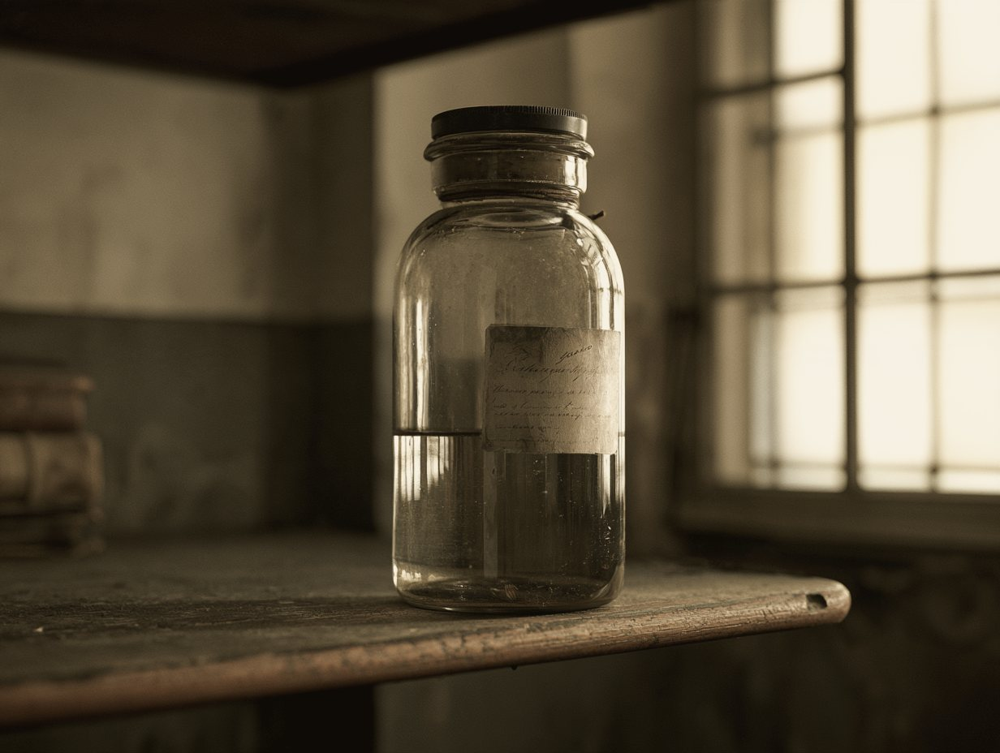
그림 · 재현19370 년째, 병 속에
일본 경찰은 그의 머리를 잘라 포르말린 병에 너헛소.
나라가 바뀌엇소. 병은 그대로 남앗소.
전쟁이 지나갓소. 병은 그대로 남앗소.
병은 국립과학수사연구원의 선반 우에 노혀 잇섯소.
「사람의 몸을 표본으로 두는 것은 비인도적」이라는 진정을 행정안전부가 바다들엿소.
불교단체가 병을 넘겨바다, 서울시립승화원에서 화장하엿소. 이틀 뒤 남양주 봉선사에서 위령제가 열렷소.
병이 비워지고 —
그는 재가 되엇소.
선반 우의 병 · 재현 그림 — 속은 알아볼 수 업게 그렷소 · 근거 · 한국민족문화대백과사전 「백백교」 · 2011년 화장 · 위령제 보도
소화 십이 년 · 왕십리에서 용문산까지
그들은 흰 것을 미덧소.
한 사람의 흰 것으로, 천하를 희게 하자 하엿소.
흰 옷 아래에는 장부가 잇섯고, 임명장이 잇섯고 —
이십여 곳의 산이 잇섯소.
가장 흰 것이,
가장 만히 덥고 잇섯소.
덥힌 것을 다 세지 못한 채로 — 지금도.
경성의 밤은 아즉 길소.
그리고 — 흰 것을 내세운 무리는,
그 뒤에도 일홈을 바꾸어 나타낫소.
라듸오를 켜고 다이알을 돌리시압. 소화 십이 년의 그 장부에서, 다른 닫힌 무리들이 잡히오. 일홈은 달랏고, 장부는 비슷하엿소.
네 사건은 모두 한 시대의 지면이오.
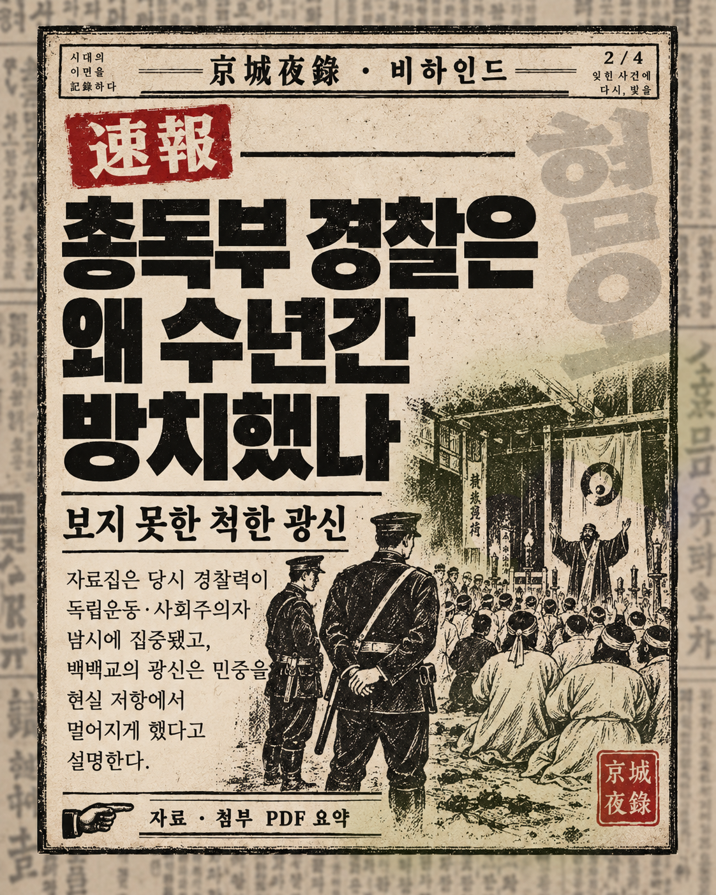
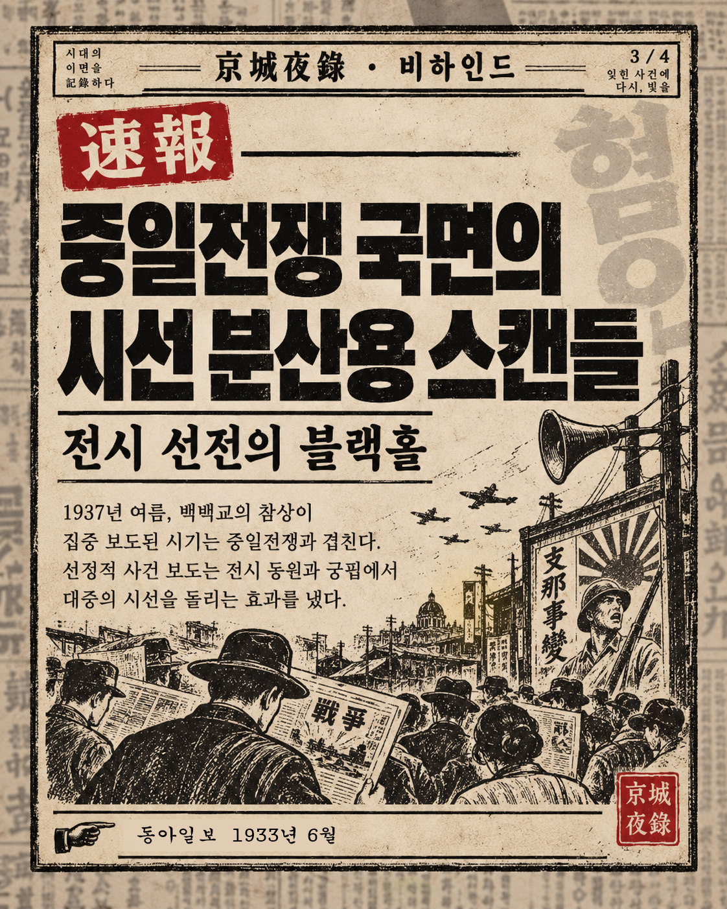
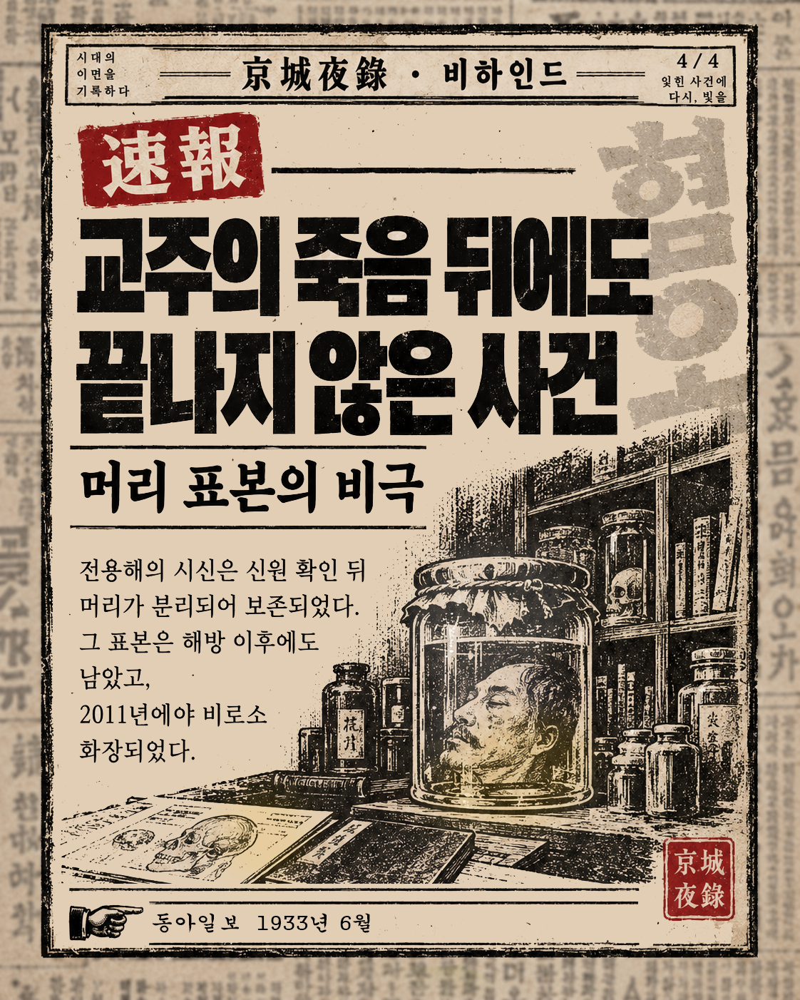
1 / 3 · 옆으로 넘기시압
1937 전쟁이 시작된 해 — 멈추엇다 도라온 신문이 땅 속의 일을 쫏앗소.
바로 이 정간 때문에, 동아일보는 백백교의 첫 소식을 싣지 못햇소. 첫 보도는 조선일보 호외엿소.
손긔졍 사건 — 바로 전 해, 이 일로 동아일보가 멈추엇소.
동아일보가 속간한 지 한 달 남짓 — 전쟁이 시작되엇소. 백백교 수사는 그 뒤로도 이어져, 삼백일 일 만에 송국되엇소.
정간에서 도라온 신문이 쫏기 시작한 사교(邪敎) 사건이오.
지금 읽은 이 사건이오.
근대 도시 경성 바로 곁 왕십리에서 벌어진 일이오. 바친 만큼 「독립이 되는 날」의 벼슬을 약속하며 재산과 식구를 내노케 햇소.
이월 십구일부터 사월 십이일까지 쉰세 날, 이 일은 어느 신문에도 실릴 수 업섯소. 동아일보는 정간 중이라 첫 소식을 놋쳣고, 류월 삼일 속간한 뒤에야 따라갓소.
동아일보가 속간한 지 한 달 남짓 중일전쟁이 일어낫소. 십이월 십일일 지면 아래칸엔 총 멘 병사를 그린 광고가 실렷소 (보도 장).
투고는 컴퓨터로 이 사건을 열면 부록에서 할 수 잇소.